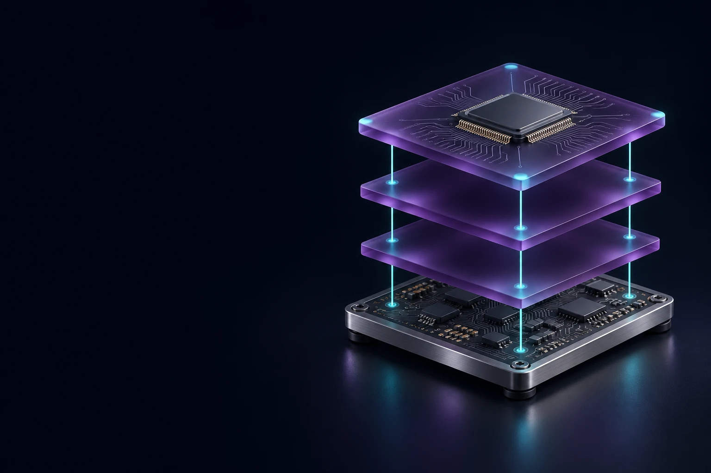

Software development at Digilians
My nine-month diploma covered data structures, database design, MERN development, testing, and cloud delivery. I put those skills together in a full-stack graduation project.
View the graduation project ↗
I build APIs with TypeScript and NestJS and connect them to React interfaces. At 5DVR, I developed the authentication, enrollment, and progress modules that take a student from sign-in to course completion.
My nine-month diploma covered data structures, database design, MERN development, testing, and cloud delivery. I put those skills together in a full-stack graduation project.
View the graduation project ↗I proposed the platform, led a team of four developers, and built seven REST API modules. I connected our React screens to Express and used Socket.IO for chat and notifications.
Explore the implementation ↗I independently developed authentication, enrollment, and student progress in NestJS. I also built React interfaces in TanStack Start and connected them to the APIs through server-side calls with Swagger-generated types.
Explore the LMS ↗ LEGAL TECHNOLOGY
LEGAL TECHNOLOGYFollow a property inquiry from a public listing into an agent’s sales pipeline.
Read case study FULL-STACK TEAM PROJECT
FULL-STACK TEAM PROJECTAn employee asks for leave. HR’s decision updates both the request and the balance.
Read case studyFollow a change from a pull request to a planned Kubernetes release.
Read case study Backend securityGive a caller a clear answer when a host check fails.
Read case study API designGive an account a session, then decide what that session can do.
Read case studyTake an API from its business rules through the database, tests, and Swagger documentation. At 5DVR, that meant deciding what happens when a student enrolls twice.
See the enrollment example ↗Connect the form a user sees to the permissions, records, and responses behind it. At LawBridge, I worked across React, Express, and real-time notifications.
See the legal service flow ↗I submit and review pull requests, document APIs in Swagger/OpenAPI, and use Docker Compose for local development. The LMS auth tests cover token rotation, password changes, and session revocation.
Read the testsApplicationReact · TanStack Start · React Router · Axios · HTML · CSS
APITypeScript · Node.js · NestJS · Express · REST · Socket.IO
DataPostgreSQL · TypeORM · MongoDB · Mongoose
AccessJWT · RBAC · refresh tokens · email verification
TestingVitest · Swagger/OpenAPI · Postman · GitHub pull requests
DeliveryDocker Compose · GitHub Actions · AWS EC2 / S3 · Linux
I’m looking for a junior backend or full-stack engineering role. Happy to walk through a project, a code sample, or a decision behind either.
semobenyamen@gmail.com